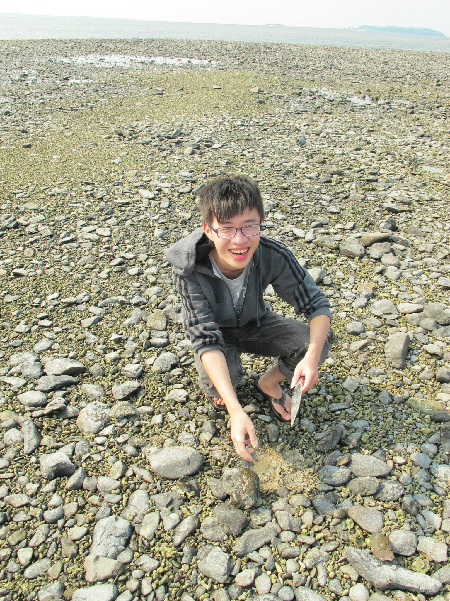

楊嘉銘(Jia-Ming Yang)
Higher Education
Master ,
Institute of Finance
,
National Chiao Tung University
Thesis: 公司債與內含賽局選擇權之評價與分析
Adviser: Prof.
Tian-Shyr, Dai
Talks and Presentations
Stocastic Calculus for Finace: 3-3 Brownian Motion
shreve4-4part1
shreve4-4part2
Game Option
Corporate bond valuation and hedging with stochastic interest rate and endogenous bankruptcy